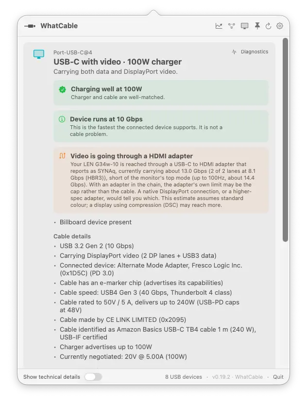

Docs
How to use the WhatCable menu bar app. Requires macOS 14+ on Apple Silicon.
- What it shows
- Charging diagnostics
- Cable trust signals
- Engineer mode
- Right-click menu
- Notifications
- Settings
- Pro features
- Troubleshooting
- Good to know
What it shows
WhatCable sits in your menu bar. Click the icon to see a popover with one card per USB-C port on your Mac. Each card shows, in plain English:
- Headline: Thunderbolt / USB4, USB device, Charging only, Slow USB / charge-only cable, or Nothing connected.
- Charging diagnostic: whether the cable, charger, or Mac is the bottleneck, with the negotiated wattage.
- Cable e-marker info: the cable's actual speed (USB 2.0 up to 80 Gbps), current rating (3A or 5A), and the e-marker chip vendor.
- Charger PDO list: every voltage profile the charger advertises (5V, 9V, 15V, 20V, etc.), with the active one highlighted.
- Connected device: vendor name and product type from the PD Discover Identity response.
- USB devices: storage, hubs, and peripherals listed under the port they are plugged into, with their negotiated speed.
- Active transports: USB 2, USB 3, Thunderbolt, and DisplayPort paths.

Charging diagnostics
When a charger is connected, WhatCable identifies the bottleneck and shows a banner:
- "Charging well at 96W" means the cable, charger, and Mac are all matched. You are getting the best charge rate this setup can deliver.
- "Cable is limiting charging speed" means the cable is rated below what the charger can deliver. A 3A cable on a 100W charger will cap you at 60W.
- "Charging at 30W (charger can do up to 96W)" means the Mac is drawing less than the charger offers. This is normal when the battery is nearly full, or the Mac is asleep.
The charger PDO list shows every voltage profile the charger advertises. The active one is highlighted. This helps you confirm whether your charger actually supports the wattage it claims on the box.
Cable trust signals
WhatCable checks e-marker data against the USB Power Delivery spec. When something looks unusual, an orange card appears with the details. This is not proof that a cable is fake. It means something in the reported data is worth a closer look.
Checks include:
- Vendor ID compared against the USB-IF published list. An unregistered VID is common on cheap cables.
- Speed and current fields validated against PD spec ranges.
- Reserved bit patterns and zero-value metadata flagged.
If a cable triggers a trust flag, it does not necessarily mean the cable is dangerous. Some budget cables use generic e-marker chips with placeholder data. The flag is there to help you make an informed decision.
Engineer mode
Hold Option and click the menu bar icon to show the underlying IOKit properties for each port. This includes raw register values, PD message fields, and USB device tree details.
You can also enable engineer mode permanently in Settings (the "Show technical details" toggle). Useful if you are debugging a cable or filing a bug report.
Right-click menu
Right-click (or Control-click) the menu bar icon for quick actions:
- Refresh: re-scan all ports immediately.
- Keep window open: pin the popover so it stays visible. Handy for screenshots, demos, or comparing cables side by side.
- Licence: enter or manage your Pro licence key.
- Check for Updates: look for a newer version on GitHub (Homebrew/zip installs only; App Store handles its own updates).
- About and WhatCable on GitHub: links to the project.
- Quit: close the app.
Notifications
WhatCable can send a macOS notification whenever a USB device or charger connects or disconnects. This is off by default. Turn it on in Settings.
When you enable it, macOS will ask for notification permission. Notifications are silent (no sound) and show the device name, speed, and vendor for connections, or a count for disconnections.
Notifications work even when the popover is closed. WhatCable runs its own background watchers for USB and power source changes. It primes a baseline at launch so you do not get a burst of "connected" alerts for things that were already plugged in.
Settings
Click the gear icon in the popover header to open Settings.
- Hide empty ports: only show ports with something plugged in.
- Launch at login: start WhatCable automatically when you log in.
- Menu bar / Dock mode: by default WhatCable lives in the menu bar with no Dock icon. Turn this off to run it as a regular windowed app instead.
- Show technical details: permanently enable engineer mode (the raw IOKit property view). Same as holding Option when you click the icon, but stays on.
- Notifications: get alerts when USB devices or chargers connect and disconnect.
- Font size: adjust the text size in the popover. Ranges from 80% to 140% of the default.
- Language: override the system language. WhatCable picks up the change on its next launch.
Pro features
WhatCable Pro is a one-time purchase that adds deeper diagnostics on top of everything in the free app. All free features stay free. Pro adds the following:
Live power metering Pro
Real-time watts, amps, and voltage per port, updated every two seconds from the battery controller. See exactly what your cable is delivering right now, not just what it negotiated.
PD contract inspector Pro
See the full negotiated power delivery contract: active voltage and current, all available PDOs decoded with type-aware formatting (Fixed, PPS, AVS), and any capability mismatches flagged.
Cable resistance estimation Pro
Multi-point regression across power samples estimates cable resistance in milliohms. Useful for spotting worn or marginal cables before they cause problems.
Port health counters Pro
Lifetime attach/detach events, hard resets, shorts, I2C errors, role swap stats, and FET failures per port. See how a port has been treated over its lifetime.

PD event trace Pro
Decoded protocol-level event history per port. See attach/detach sequences, contract negotiation steps, and hard reset events as they happen.
DP Alt Mode details Pro
Lane count, link rate, tunneled vs native, and full EDID data with monitor model, manufacturer, and year for any display connected over USB-C.

Raw VDO identity Pro
Full Discover Identity VDOs from SOP and SOP' (the cable plug itself). Go beyond the e-marker summary to the raw fields your cable's controller actually reported.
Liquid detection Pro
LDCM sensor status per port. See whether the liquid contact indicator has been triggered on any port. Useful for diagnosing intermittent charging faults.
CC advertisement level Pro
Rp current advertisement level with inferred CC line voltage. See what current level your port's pull-up resistor is advertising to attached devices.
Power monitor window Pro
A dedicated window with live charts showing watts and voltage over time per port. Pin it while you test a charger or cable under load.

CLI monitor mode Pro
whatcable --monitor streams live power and cable state to your terminal. Pipe it, script it, log it.
Widget power sparkline Pro
The desktop widget shows a live power chart alongside cable status. Glance at your desktop and see charging trends without opening anything.
Troubleshooting
My cable shows as "Basic cable" with no e-marker data
Most cables under 60W do not have an e-marker chip. This is normal and per spec. USB-PD only requires an e-marker for cables rated above 3A (60W). Thunderbolt, USB4, and 100W+ cables will always have one.
Some cables only reveal their e-marker once a device is plugged in at the other end. macOS only queries the e-marker during PD negotiation above 3A. Try plugging in a higher-wattage charger (60W+) and check again.
Vendor shows as "Unregistered / unknown"
WhatCable looks up vendor names using the USB-IF published list, which is bundled with the app. If a vendor registered after the bundled list was compiled, their name will not appear until the next app update. This does not mean the cable is fake, only that the VID is not in the local list yet.
Intel Mac not supported
WhatCable requires Apple Silicon (M1 or later). Intel Macs use a different Thunderbolt controller (Titan Ridge / JHL series) that does not expose USB-PD state through IOKit. There is no workaround for this.
WhatCable icon not appearing in the menu bar
If your menu bar is full, macOS may hide the icon. Try closing other menu bar apps or using a tool like Bartender to manage overflow. You can also switch to Dock mode in Settings if menu bar space is tight.
Notifications are not showing up
Check two things. First, make sure notifications are turned on in WhatCable's settings (the toggle in the gear menu). Second, check macOS System Settings > Notifications > WhatCable and make sure alerts are allowed. If you denied the permission prompt on first run, you need to re-enable it there.
"Report this cable" is not showing any data
The report feature needs e-marker data to work. If no e-marker was read, there is nothing to report. Two common reasons: the cable genuinely does not have an e-marker chip, or macOS has not queried it yet because the negotiated current is below 3A. Try a higher-wattage charger (60W+) to trigger the read.
Good to know
- WhatCable makes no network calls of its own (App Store version). The Homebrew/zip version checks GitHub for updates once every six hours. No analytics, no telemetry. See the privacy policy.
- WhatCable trusts the e-marker chip for cable capabilities. If a cable claims 240W / 40 Gbps but performs poorly, the chip is reporting incorrect data.
- The cable database is built from community-reported cables. If your cable is not listed, use "Report this cable" in the app to contribute.
- WhatCable includes a command-line tool with JSON output, watch mode, and cable reports. It ships inside the app bundle and is on your PATH automatically if you installed via Homebrew.